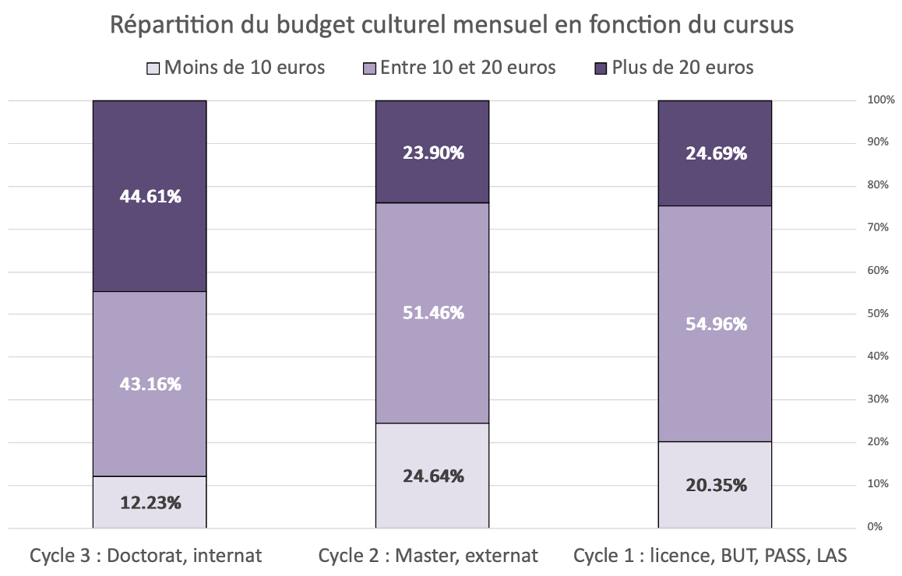

Enquête & Redressement Statistique
Réalisation d'une enquête de A à Z : du questionnaire au redressement des données via la macro CALMAR.

Contexte
Ce projet avait pour but d'analyser les pratiques culturelles des étudiants (cinéma, lecture, musées) pour l'année 2025. Au-delà de la simple collecte de réponses via le questionnaire, le défi majeur était de corriger la distorsion de l'échantillon. En effet, les répondants n'étaient pas parfaitement représentatifs de la population étudiante réelle (différences de répartition par sexe ou discipline observées dans les statistiques administratives).
Méthodologie
- Conception : Création du questionnaire d'enquête ciblant les habitudes de consommation culturelle.
- Traitement des marges : Comparaison des effectifs réels (Données administratives théoriques) vs Données collectées.
- Redressement (Calage) : Utilisation de la macro SAS CALMAR (Calage sur Marges) pour recalculer les poids des individus et rendre l'échantillon représentatif.
- Analyse : Exploitation des données redressées sous Excel pour produire des statistiques fiables.
Technologies
- SAS : Macro %CALMAR (Standard INSEE) pour le redressement.
- Excel : Nettoyage des données brutes et tableaux croisés dynamiques.
- Techniques de sondage : Echantillonnage, quotas et pondération.
Ce que j'ai appris
Ce projet m'a appris qu'une donnée brute est rarement utilisable telle quelle. J'ai acquis une compétence clé en statistiques publiques : le redressement d'échantillon, indispensable pour éviter de tirer des conclusions biaisées à partir d'un sondage.